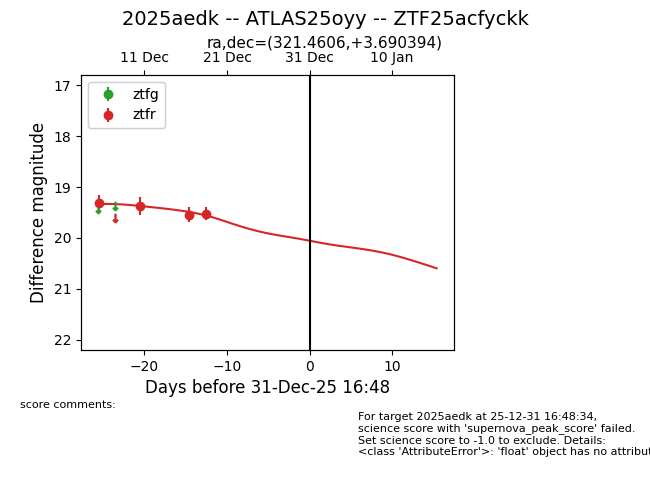
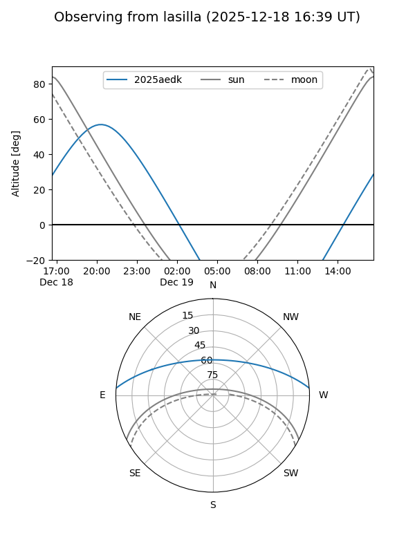
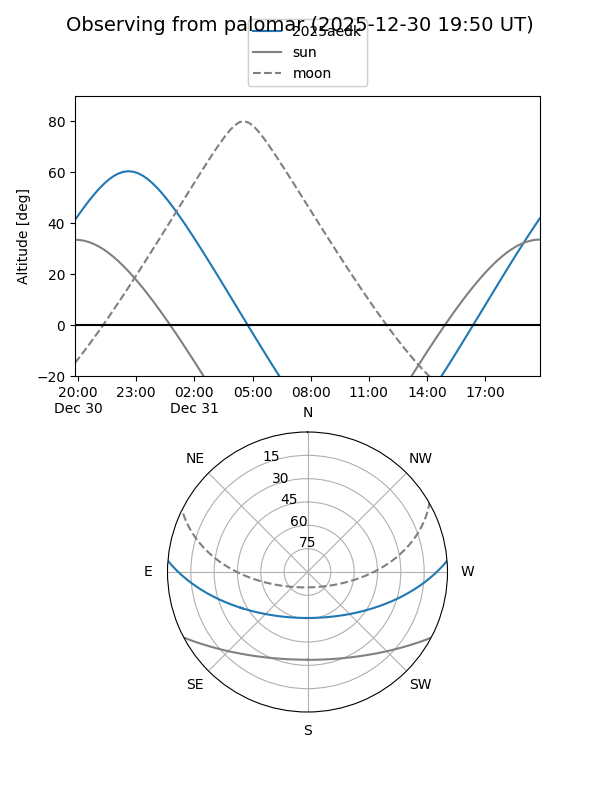
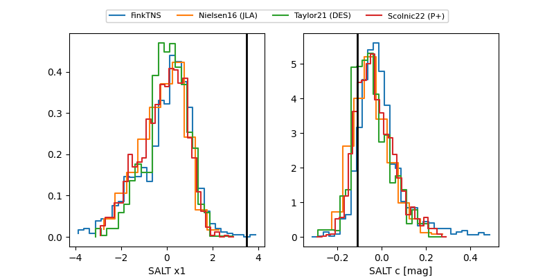

2025aedk
Target 2025aedk at 2025-12-18 11:17
Aliases and brokers:
FINK: fink-portal.org/ZTF25acfyckk
Lasair: lasair-ztf.lsst.ac.uk/objects/ZTF25acfyckk
ALeRCE: alerce.online/object/ZTF25acfyckk
TNS: wis-tns.org/object/2025aedk
YSE: ziggy.ucolick.org/yse/transient_detail/2025aedk
alt names
ZTF25acfyckk (ztf,fink_ztf)
2025aedk (tns,yse)
ATLAS25oyy (atlas)
Coordinates:
equatorial (ra, dec) = 321.4606,+3.69039
equatorial (HMS+DMS) = 21:25:50.55,+03:41:25.42
galactic (l, b) = (56.5600,-31.65199)
Photometry
last ztfr=19.54
3 ztfr detections
Lightcurve

Visibility


Additional plots
